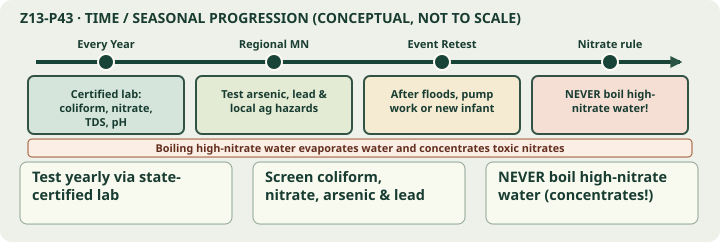

Z13-P43 · Home survival and utilities · New manuscript
Schedule annual certified-lab testing for private drinking wells
Detect invisible microbial and naturally occurring or agricultural chemical contaminants in private groundwater before illness occurs.
When it applies · All households drinking from private wells, especially families with infants, pregnant members, or agricultural/mineral geology.
Equipment · Sterile sample bottles from a state-certified water testing laboratory and annual maintenance calendar.

Actions
- Test private well water EVERY YEAR through a state-accredited/certified laboratory for total coliform bacteria, nitrates, total dissolved solids, and pH—and test additionally for arsenic (common naturally in Minnesota glacial aquifers), lead/copper (especially in older plumbing), and local agricultural/industrial contaminants per county health advice.[U05, W23, U06]
- Retest immediately after ANY flooding, new well/pump work, household gastrointestinal illness, nearby chemical spill, or pregnant woman/infant moving into the home (high nitrates cause dangerous methemoglobinemia/"blue baby" risk and are NOT removed by boiling—boiling concentrates nitrates!).[U05, W22, W23]
- Follow exact certified-lab bottle sampling and cold-shipping time limits so sample results remain valid.[U05]
Failure recognition · Boiling high-nitrate rural well water to mix infant formula, which actually evaporates water and concentrates toxic nitrates even higher.[W22, W23, U05]
Verify · Confirm annual certified-lab report is filed in the home binder and any exceedances are matched to certified treatment or safe alternate water.[U05, W21]
Stop or change course · Any positive E. coli/coliform test or chemical exceedance (nitrate/arsenic/lead) triggers immediate safe-water substitution and health-department/contractor action.[U05, W22]
Evidence and editorial notes
- U05 · US EPA · Private Drinking Water Wells (current web edition)
- Section: Private Drinking Water Wells > Maintenance, Floods, and Testing · Conditions: Households relying on private domestic groundwater wells
Support: Private wells are not regulated by municipal utilities; test water annually (and after any flood, power loss with pressure drop, or plumbing repair) through a certified laboratory and keep wellheads sealed above grade away from runoff and chemicals.
Limitations: Visual clarity or normal taste never proves a private well is free of bacteria, nitrates, or arsenic. · Conflicting evidence: None; aligns with CDC-WELL (W18) and MDH-WELL-HOME.
Editorial note: Core private-well governance and testing cadence in Z13. · Specialist reviewer: Hydrogeology, licensed well contractor, and public health
Primary source · checked 2026-11-24 - U06 · Minnesota Dept. of Health · Wells and Borings Safety (current web edition)
- Section: Wells and Borings > Minnesota Private Well Standards and Disinfection · Conditions: Minnesota and Upper Midwest private residential wells
Support: Use a licensed Minnesota well contractor for wellhead repair, electrical pump work, or shock disinfection after flooding or backflow; maintain sanitary well caps and isolate well casings from surface snowmelt and agricultural runoff.
Limitations: DIY well-cap removal or improper chlorine mixing risks aquifer contamination and electrical shock. · Conflicting evidence: None; regionalizes EPA-WELL for Minnesota conditions.
Editorial note: Anchors Upper Midwest private-well resilience and licensed-trade handoff. · Specialist reviewer: Minnesota environmental health and licensed well trades
Primary source · checked 2026-11-24 - W21 · CDC · Choosing Home Water Filters and Other Water Treatment Systems (current web edition)
- Section: Check filter label for which germs and chemicals it removes; filter types · Conditions: Exact point-of-use model and a known target
Support: Verify the named independently tested reduction claim for the model. A treatment type or general standard number does not establish reduction for a different contaminant.
Limitations: Compare the product label and actual conditions; follow the active water advisory. · Conflicting evidence: See A02 claim audit for boundaries.
Editorial note: Frames equipment selection around verified contaminant classes and certifications. · Specialist reviewer: Drinking-water treatment specialist
Primary source · checked 2026-11-24 - W22 · US EPA · National Primary Drinking Water Regulations (current web edition)
- Section: National Primary Drinking Water Regulations · Conditions: Surface or groundwater near agriculture, industry, mines, roads, or old plumbing
Support: Regulated drinking-water hazards span inorganic chemicals (lead, arsenic, nitrate), organic solvents, pesticides, radionuclides, and microbes; microbial treatments do not remove dissolved inorganic or organic chemicals.
Limitations: Field observation cannot measure dissolved chemical concentration; laboratory testing is required. · Conflicting evidence: None; underpins strict chemical-rejection boundaries.
Editorial note: Explains why agricultural runoff, mine tailings, and road salt/fuel require source rejection. · Specialist reviewer: Environmental toxicology and drinking-water safety
Primary source · checked 2026-11-24 - W23 · Minnesota Dept. of Health · Drinking Water Contaminants (current web edition)
- Section: Drinking Water Contaminants · Conditions: Minnesota surface and groundwater sources
Support: Agricultural nitrates, industrial chemicals, road runoff, and naturally occurring minerals can affect local water independent of visual clarity or microbial load.
Limitations: Specific contaminant risk varies by county, aquifer, and watershed land use. · Conflicting evidence: None; regionalized extension of EPA-CONTAM.
Editorial note: Anchors Upper Midwest watershed and land-use source screening. · Specialist reviewer: Regional environmental health
Primary source · checked 2026-11-24
Source lineage · US EPA Private Wells and MN Dept. of Health; new manuscript · Classification · New manuscript.